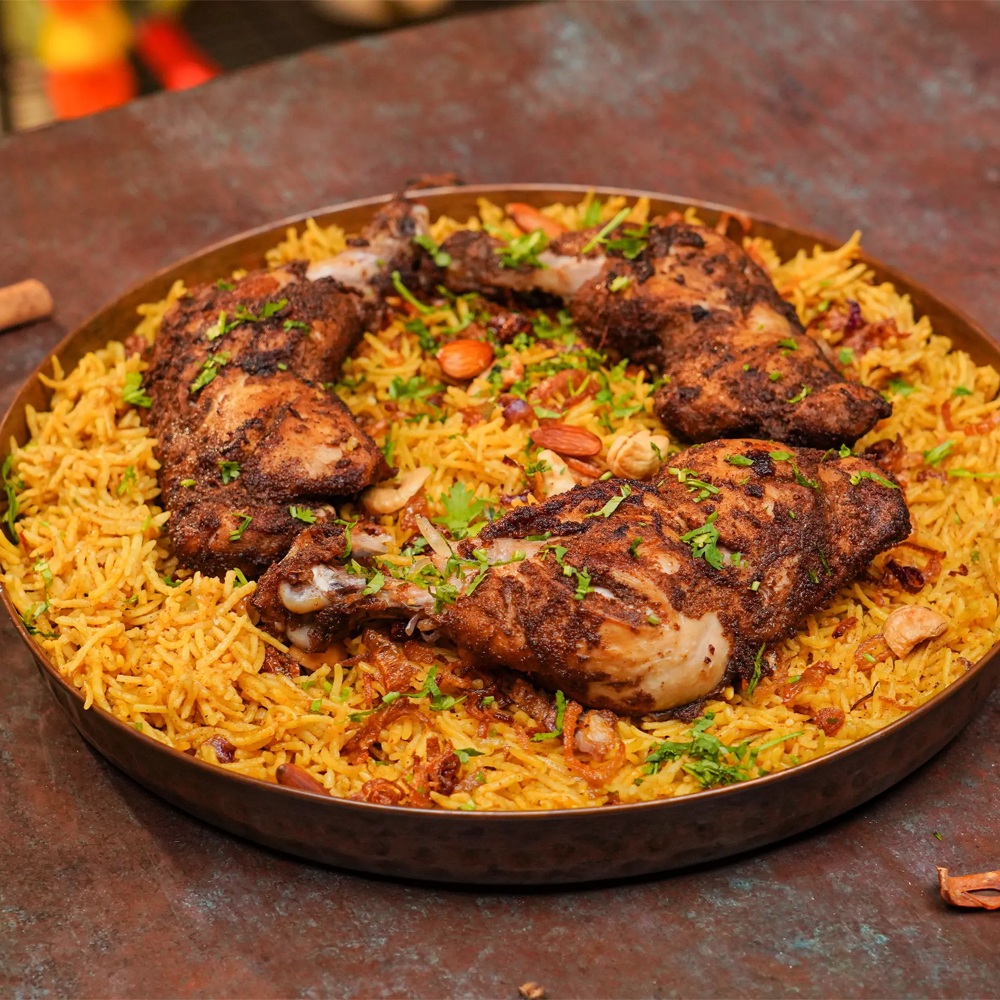

Chicken Mandi
Non-Veg · Tender spiced chicken on fragrant Arabian rice
Your photo goes here
(save it as images/chicken-mandi.jpg)
(save it as images/chicken-mandi.jpg)

Ingredients checklist
0 of 0 ingredients ready
You have everything. Time to cook!
Instructions
- Mix all the spice mix ingredients. Rub half of it and 1 tsp salt over the chicken pieces.
- Heat the ghee in a large heavy pot and brown the chicken on all sides. Take it out and set aside.
- In the same pot, fry the onions until golden. Add the garlic, whole spices and tomatoes and cook for 5 minutes.
- Return the chicken to the pot with the dried limes and the hot water or stock. Cover and simmer for 35 to 40 minutes until the chicken is tender.
- Lift out the chicken. Strain the stock and measure about 4 cups into the pot (top up with water if needed).
- Add the soaked rice, the remaining spice mix and salt to taste. Bring to a boil, then cover and cook on the lowest heat for 15 to 18 minutes until the rice is done.
- While the rice cooks, brown the chicken pieces in a 200°C (390°F) oven for 10 to 15 minutes, or on a hot grill pan.
- Spread the rice on a large platter, place the chicken on top and garnish with raisins and almonds.